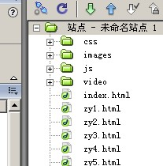
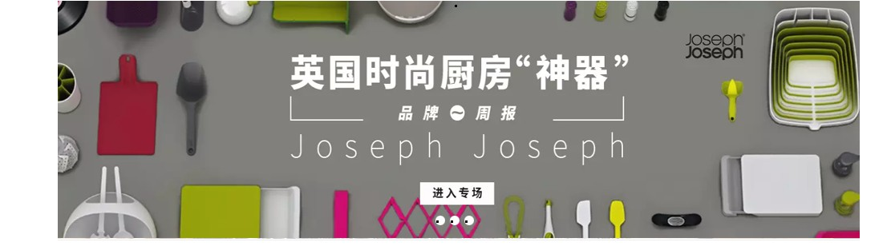
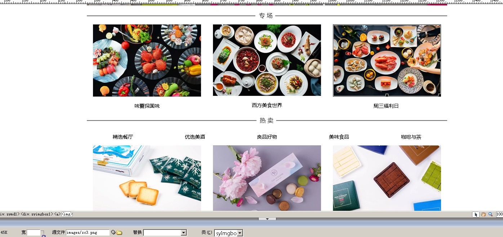
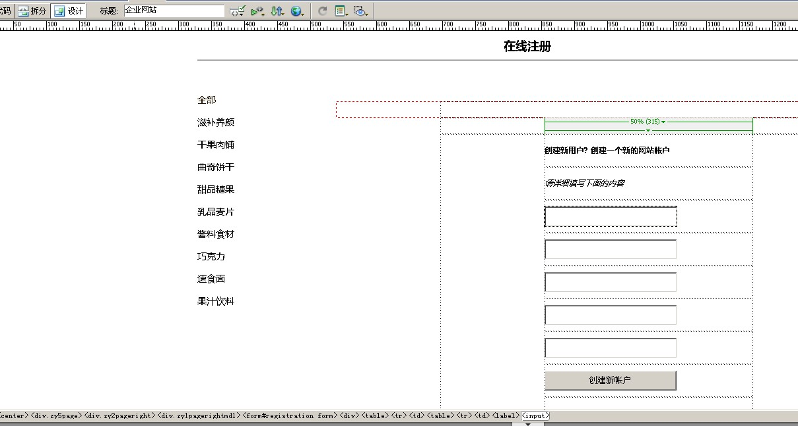

学习《web应用基础》以来，我就想利用所学的网页知识来制作一个喜欢的网站，因为喜欢美食，也喜欢零食就做了一个食品类型的公司网站，在前期收集了素材和在老师的教导下，在网上看了一些基础的制作教程，于是我动手制作我的网站。
首先要考虑整个网页的长和宽，以及长度和宽度之间的比例。
其次就应该考虑导航条的设置了。
正文的框架设置
在浏览了很多精美的网站之后，
再结合自己的想法，
我先在草纸上画出了大体的栏目和板块。
网站的整体风格和创意：建立一个按网页制作要求的网站，务必使浏览者留下印像。
资料的搜集：由于个人比较关注网站方面的一些图片和文字等，接着就搜集了一些网页背景，FIASH源代码、小图标和一些GIF的动画等。
熟悉制作工具软件：网页制作的基本条件有：
软件：HTML编辑软件：vscode；
图像处理软件：常用的有Photoshop、flash等；
文件上传软件：常用的有Cuteftp、WSftp等。
页面主要采用DIV加CSS制作，文件夹命名主要由英文加数字构成。IMAGES放图片文件夹。CSS文件夹里面放CSS文件， VIDEO文件夹里面放背景音乐，用DIV+CSS的方式制作导航栏。加上链接完成整个网站的调试。
设置网页页面居中，字体大小颜色等属性：
*{padding:0; margin:0; border:0;}
body,td,th {
font-size: 12px;
color: #000000;
}
设置导航代码：
.menu {
position:relative;z-index:19999;
font-family: arial, sans-serif;
width:1000px;
float: left;
clear: both;
background: url(../images/menu.png) no-repeat;
margin-top: 0px;
margin-right: 0;
margin-bottom: 0px;
margin-left: 0px;
padding: 0px;
height: 35px;
}
.menu ul {
padding:0;
margin:0;
list-style-type: none;
}
.menu ul li {
float:left;
position:relative;
}
.menu ul li a, .menu ul li a:visited {
display:block;
text-align:center;
text-decoration:none;
width:165px;
height:35px;
color:#fff;
border:1px solid #fff;
border-width:1px 1px 0 0;
line-height:40px;
font-size:12px;
font-family: "黑体";
text-transform: uppercase;
}
.menu ul li ul {
display: none;
}
.menu ul li:hover a {
color:#fff;
font-size:13px;
}
.menu ul li:hover ul {
display:block;
position:absolute;
top:40px;
left:0;
width:105px;
}
站点文件展示如下：
导航制作好后，通过插入图像完成网站BANNER的制作。
这里插入了一个图片切换特效，引用的JS文件夹下面的JS文件。
继续插入新的DIV标签，完成首页下方的三行三列布局的制作。最终完成首页效果。
利用制作首页同样的方法完成其它页面制作，然后制作右侧效果，在插入菜单里面找到表单，插入表单，在表单里面然后插入各个表单项，完成表单页的制作： 在编辑区域里插入表单——表单：HTML部份代码如下：
<:input name="text" type="text" tabindex="1" placeholder="请输入您的帐户名:" required="required" autofocus="autofocus" />
完成最终效果：
仍然在DW利用制作好的二级页面，然后插入音乐和滚动文本等制作音乐页面和其它文章图片页面。 最终完成整个网站的制作。
真的是万事开头难啊，遇到了很多问题，比如：插入的图片不符合规格，一下子把其他内容的框架挤开；插入的层太多，大一点的就把小一点的给覆盖掉了；插入的FLASH不能产生效果。总之问题一箩筐。实践出真知，原来自己还有那么多欠缺的知识。于是回归本源，先把课本上的东西弄通再谈其他。然后又到百度里里看了很多网页方面的知识。
在对基本知识有了详细的了解之后，做起东西来就得心应手多了，把准备在主页上出现的图象放进相应的目录里后在一步一步的边学边做的过程中，看着心中的东西一点一点的出来，真的很有成就感。虽然自己的网页技术还差的远，但是回顾一下这学期真的学到了很多的东西。